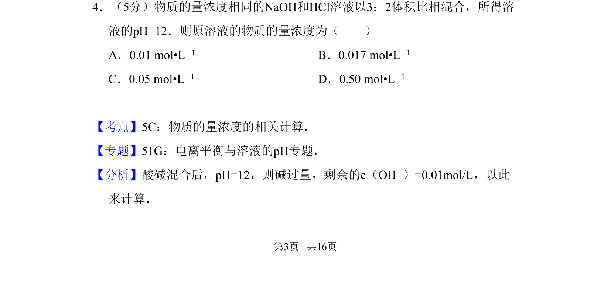
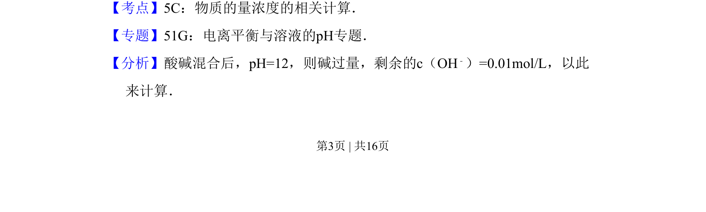
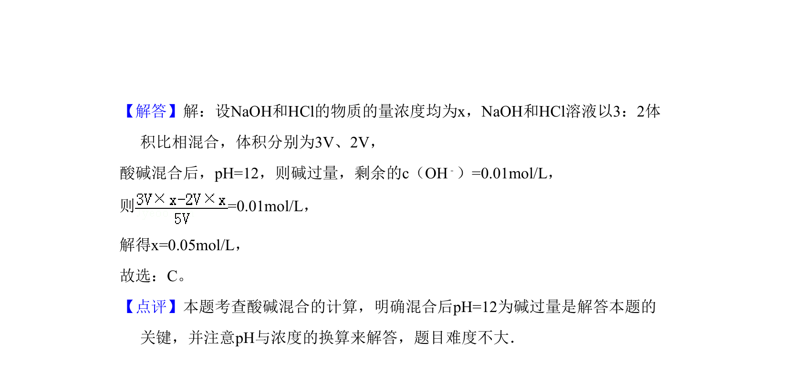

考点：物质的量浓度 pH 酸碱中和 电离平衡

酸碱混合pH计算，利用过量碱的浓度反推原溶液物质的量浓度


📄 原 PDF 第 3 页：
素材/真题/吉林/2008-2024·（吉林）化学高考真题/2008年高考化学试卷（全国卷Ⅱ）（解析卷）.pdf
4．（5分）物质的量浓度相同的NaOH和HCl溶液以3：2体积比相混合，所得溶 液的pH=12．则原溶液的物质的量浓度为（ ） A．0.01 mol•L﹣1 B．0.017 mol•L﹣1 C．0.05 mol•L﹣1 D．0.50 mol•L﹣1
【考点】5C：物质的量浓度的相关计算．菁优网版权所有 【专题】51G：电离平衡与溶液的pH专题． 【分析】酸碱混合后，pH=12，则碱过量，剩余的c（OH﹣）=0.01mol/L，以此 来计算．